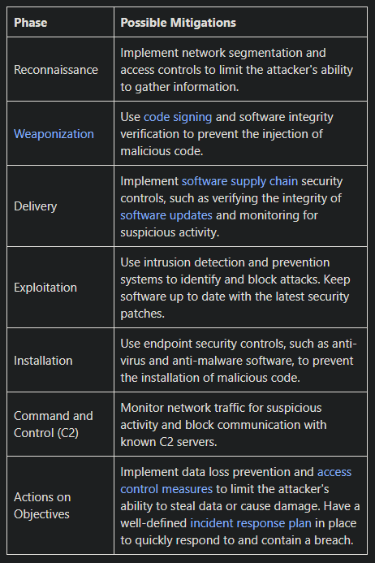

Table analyzing the Solarwinds exploit using the Cyberkillchain:
Possible mitigation for each phase:
Tools that could be used in each part:
SolarWinds exploit demonstrated the effectiveness of a sophisticated attack that utilized multiple stages of the Cyber Kill Chain. While some phases, such as reconnaissance, were not explicitly identified in the article, the attack highlights the importance of implementing security controls and tools across all stages of the Cyber Kill Chain. Effective mitigations for each phase include network segmentation, code signing, software supply chain security controls, vulnerability scanning, endpoint security controls, and monitoring for suspicious activity. The tools that could be used in each phase include network monitoring tools, vulnerability scanning and patch management tools, endpoint security tools, and threat intelligence and monitoring tools.
created with
Website Builder Software .